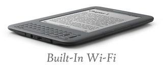
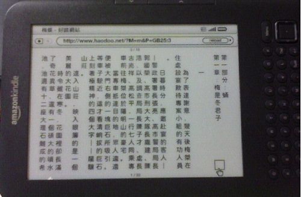

好讀prc檔適用於Amazon Kindles，及所有可以開啟mobi檔的閱讀軟體。
Amazon Kindles 都可以閱讀好讀prc檔 周劍輝 2012/2/24
- Kindle Fire：沒有中文問題。
- (下載prc檔至PC) 用usb連線至Kindle Fire，將檔案移至 Documents 或 Books 資料夾，再至首頁按 Docs 就可以看到了。
- (用Kindle Fire的瀏覽器下載prc檔) 下載的檔案是在 Download 資料夾，Kindle Fire不會自動顯示在書架上。要將檔案移至 Documents 或 Books 資料夾，再至首頁按 Docs 才找得到。移動的方法是用PC，或在Kindle Fire上另裝檔案管理的軟體，如 ES File Explorer。
- Kindle/Touch：應該沒有中文問題。(請讀友來信確認)
- Kindle Keyboard (原稱 Kindle 3)：需要先將預設語系由 en-US 改為zh-TW：
Home -> Menu -> Search
輸入以下三行指令：
;debugOn (按 Enter)
~changeLocale zh-TW (按 Enter)
;debugOFF (按 Enter)
接著重開機：
Home -> Menu -> Settings -> Menu -> Restart
- Kindle 2/DX：有中文問題。解決方法請參看Kindle 2/DX中文化。
Kindle Fire 可以直式閱讀好讀updb檔 周劍輝 2011/12/15
Kindle Fire的內建軟體可以橫讀好讀prc檔，要直讀？可以安裝Ian Wong撰寫的cBook，直式閱讀好讀updb檔，安裝的方法很簡單：
- 在Kindle Fire的Settings，點Device，其下有一項：Allow Installation of Applications From Unknown Sources，選On。
- 用Kindle Fire內建的瀏覽器，至本頁，按右邊的 [下載 cBook.apk]。
- 下載完畢時，選擇Install就可。
cBook是香港的讀友Ian Wong兩年多前撰寫。他首次於2009/8/10來信：「本人一直為閣下的好讀軟體所荼毒，由 palm 到 wm，至現在的 android。由於太習慣直讀了，在無直讀軟體的 android 十分不習慣。所以班門弄斧，造了一個 android 的直讀軟體。」
cBook是用Java寫的。Ian也真厲害。他是從零開始，原先連一點Java都不懂。這兩年Android的機種越來越多，他也很敬業，改了好幾個版本，有很多的使用者。
我一直沒有Android的機子。十月份買了Nook Simple Touch，root成Android，才有機會試了cBook。這回因Kindle Fire是彩色機，才發現cBook預設的背景是黑色，難怪原先在Nook Simple Touch看起來怪怪的，電子紙不反光，白底應該比較適合。
cBook已經非常好用了。書頁顯示部份若能改成好讀程式的逐字排版方法，或許更好看，更容易維護。感謝Ian Wong大方，給了我他的程式碼，待我有空時，量身修改成好讀Kindle Fire版。容我先邊試邊改，若效果還不錯，當然與大家分享。
Kindle Fire vs Nook Tablet 周劍輝 2011/11/24
終於收到Kindle Fire，也去Barnes & Noble買了Nook Tablet來比較。都是七吋的觸控螢幕，拿在手上看書上網，效果不錯，不會太重，攜帶也方便。
- 兩者內建的瀏覽器都可按〔線上閱讀〕，直式閱讀好讀網站上的書。
- Nook Tablet可以按〔下載epub檔〕，直接下載站上2011/10/10之後提供的epub檔，立刻就能橫式閱讀。請注意：在Nook閱讀時，Text設定的Publishers Defaults要打勾才能正常閱讀。2011/10/10之前提供epub檔的書，無法正常顯示，請用PC下載updb檔，使用mPDB轉成epub檔。
- Kindle Fire按〔下載prc檔〕，下載prc檔，但首頁書架上找不到。[是被下載至 Download 資料夾，要移至 Documents 或 Books 資料夾，再至首頁按 Docs 就可以看到了。 (2012/2/24)。]
(2012/2/24) Amazon軟體改善的速度比較快，市場的開拓也比較敏銳，App Store中提供的App也越來越多，用途比較多，小朋友也可拿著玩遊戲，好得很。Barnes & Noble則笨得可以，去年十二月的推出的firmware 1.4.1更新，鎖死了機子，不讓使用者另裝軟體，只能當一個看書上網的機子，不是令人期望的Tablet。
Kindle Keyboard (原稱 Kindle 3) 周劍輝 2010/9/13
讀友撰寫的轉檔工具
- (updb/pdb轉mobi) 好讀PDB的Calibre擴充 (Kan-Ru Chen)
2011/11/15 (Leo Zai) MAC使用者注意：以OS X的Browser（Safari）下載Plugin，如檔案自動展開為資料夾形式，須將此資料夾再壓縮成zip，然後於「偏好設定／外掛程式／從檔案載入外掛程式」中方能指定。
- (updb/pdb轉html) 線上轉換工具 (Brian Lam)
2010/4/20 (jamy) (Kindle 3 的預設語系 en-US 改為zh-TW)
Home -> Menu -> Search
輸入以下三行指令：
;debugOn (按 Enter)
~changeLocale zh-TW (按 Enter)
;debugOFF (按 Enter)
接著重開機：
Home -> Menu -> Settings -> Menu -> Restart
2010/9/26 (Erik Lee) (轉檔工具測試報告) 最近自己的Kindle3入手，迫不急待想試試「好讀」電子書的呈現。我按照好讀網站上目前提到的兩個方式來測試，一是Calibre的外掛，一是將pdb線上轉成html，再透過郵寄html到'name'@free.kindle.com，讓Amazon來轉檔。
用線上轉成html，再交給Amazon轉檔，有目錄頁，但用5-way的左右鍵，不會跳上下章節。
用Calibre的外掛，轉成mobi檔，則無須透過Amazon轉檔，有目錄頁，用5-way的左右鍵可跳上下章節，而且是不論pdb或updb檔 (updb要先改成pdb) 都能處理。
唯一需注意，也是我後來才發覺到的事，則為轉檔完成後，務必要透過手動將檔案拷貝到kindle3上，也就是透過usb連上kindle後，將轉好的mobi檔，拷貝到kindle的磁碟機上。
由於Calibre會偵測到kindle連線，並且很方便的提供了可從Calibre程式裡，直接將轉好的mobi檔，傳送到kindle的功能，因此之前我的測試，有時會用到這個功能，有時會手動拷貝檔案，造成我以為會掉字的原因，在於編碼。
幾番測試，並留意所有程序後，才發覺其實都與編碼無關，也與pdb或updb無關。透過Calibre傳檔，我不清楚傳輸中程式做了什麼處理，傳過去的檔案，一定會掉字。我自己已用pdb和updb檔做過測試，只要是透過手動拷貝檔案，kindle閱讀一切正常。
2010/9/25 (周劍輝) (prc檔) 解決了章名重複的問題，也特別感謝德國讀友鄭家鴻解決了prc檔書名及作者會亂碼的問題，讓我能快速產生prc檔。prc檔都已更新。
2010/9/24 (周劍輝) (prc檔) prc的格式較我原先想像的複雜多了，待我弄清所以然，寫出完美的轉出程式，恐怕需要一段時間，所以想到用現成工具。試了一天，終於搞定一個快速方法。先安裝Mobipocket Creator 4.2。用mPDB 2.6 產生epub目錄，修改content.opf中之書名及作者 (原中文在Kindle上會亂碼)，點擊content.opf，就會開啟Creator，按Build，就OK了。快速，但有些小缺點，我沒設TOC，但可上下章 (按 5 way controller 的左鍵是上一章，右鍵是下一章)，另外Creator會畫蛇添足，在每章頭再加一個章名。
如果您對Creator很熟，請試看看如何修改epub檔中的content.opf，讓書名及作者能正常顯示。epub檔中的toc.ncx也讓Creator不知所措，如果您能改出一個較佳的content.opf格式，我可以寫程式自動產生。另外，TOC如果設了，就不能上下章節，是否如此？恭請協助。

Amazon在八月推出全新的Kindle 3，價格也大降至$139。因支援Unicode，可以顯示中文，陸續有不少讀友來信詢問，是否可下載好讀網站的書至Kindle 3上閱讀？
Kindle是個封閉的系統，目前沒有軟體可直接讀好讀的uPDB/PDB檔。但Amazon遲早會開放撰寫工具，屆時再來考慮。雖說如此，目前還是有幾個方法可使用Kindle 3閱讀好讀網站的書。
因Kindle 3內建Wi-Fi，可以隨時隨地上網，理論上是絕對可以使用Kindle 3的網路瀏覽器(Browser)閱讀好讀網站的書。感謝蔡政良提供以下Kindle 3上的正常使用畫面。

請注意以上畫面的Kindle 3是橫置的。直置如何？已有幾位讀友證實每行會多幾個字。這個問題iPad也有，但改一次語系就正常了。請參看：
好讀網頁版1.4，在iPad上的使用畫面。問題是Kindle 3好像沒有語系的設定功能，至少截至目前沒有人知道藏在何處。
蔡政良又說Kindle沒有fit-to-height功能，若有，超出的幾個字也可縮回顯示。怎麼辦呢？他也真高明，他發現如果先將Kindle字體放大成150%, 再選fit-to-width將字體縮小, 整個版面即可完整顯示，如右圖。可惜閱讀至下個章節時字型又會自動被放大。
當然，最好的方法，是我為Kindle 3量身調整一下好讀網頁版。已調整了，但因沒機子可核對，麻煩大家協助測試一下，提供點意見。(我已訂購了一臺Kindle 3，但可能月底才會收到。)
劉榮甲來信說：「我已經用Kindle 3 wifi 進入貴網站看書。用直式看沒有困難，只是字體略為小些。用橫式看時，網頁略為大些。」(字體大小的預設值是20，可以改大：點書名，進入目錄頁，點下緣的設定，就可另選字體大小。我已將Kindle字體大小的預設值改為24。)
另外，蔡政良說：「我自己嘗試用mPDB取出txt檔，再透過Mobipocket Creator手動轉成prc格式的確可以成功，不過如果貴站能提供prc格式下載，就再好不過了。」如果您也同意蔡兄的想法，請來信。(7位讀友)
mPDB的下一版是預計要增加一個轉出ePub檔的功能，這個規格Kindle不支援。若mPDB能先增加一個轉出prc檔的功能，則理論上說，很多讀友就可用mPDB自行製作中文或英文書在Kindle上橫式閱讀，好像也蠻不錯的。
2010/9/23 (周劍輝) (Kindle 3的Experimental Browser) Browser的中文顯示有不少問題，使用一下就會嚴重缺字，也無法清cache，即使我改了好讀網頁版也無法更新。結論是目前無解，但也不用太失望，Amazon已擺明說，Browser是Experimental，實驗版。什麼是實驗版？從來沒聽過。大概不是Alpha、Beta，更不是正式版，只是卡位，請大家一起先玩玩的紅蘿蔔。不用罵臭頭，給Amazon一點時間修正。再說，若不是Browser及mobi都有問題，在mPDB增加一個轉出prc檔的功能，也不會成了我近日有空時，優先考慮要做的事，All in good time。
2010/9/22 (周劍輝) 昨天收到Kindle 3，驗證了一些問題。試了德國讀友鄭家鴻用Calibre將武當一劍的epub轉成的mobi，發現多處變成方塊。我另外用Mobipocket Creator轉成prc，則不會有方塊。另外也安裝了讀友Kan-ru Chen撰寫的一個Calibre pdb Plugin，直接將武當一劍的updb轉成的mobi (沒看到prc的選項)，結果也是多處變成方塊。
結論是mobi與prc的顯示軟體不一樣，mobi處理中文有點問題。見下二圖。Note. 兩者字型不一樣，不知是否有關係。(epub我是用zh-TW，所以prc也是，mobi疑是zh-CN)。
圖一：mobi (有缺字方塊) 圖二：prc (正常)
(德國 鄭家鴻) (用 Calibre 將 ePub 轉成 mobi 格式) 方才試著用 Calibre 這套軟體將梁羽生《武當一劍》的 ePub 轉成 mobi 格式，發現在 Kindle 3 上面可以使用目錄 (TOC) 的功能。 (2010/9/21)
(Brian Lam) (將好讀書檔轉成html格式) 我寫了一個
線上轉換工具。This tool will allow user to convert the pdb updb files to one single HTML file and after than they can do whatever they want, send to Kindle or other ereader. (2010/9/20)
(Farley Lai) (Kindle 3閱讀網頁版的問題) 您好,我是Kindle 3的使用者，目前網頁版的介面可以在Kindle 3上使用無礙，但連續閱讀數十頁後，會出現字體錯亂的情形，詳細的截圖紀錄在
我的部落格上，目前已經向Amazon反應。由於好讀網頁版運作與一般網頁頗為不同，這個問題未必能輕易地釐清並解決，或許提供prc或txt格式直接下載會是比較快速的暫時解決之道，因為Kindle 3的瀏覽器僅能下載數種有限支援的閱讀文件格式。 (2010/9/16)
(Jerry Wang) (Kindle 3) 可以用Microsoft WORD, under insert, select insert text from file. 再用shift key 去同時選所有的 text files (text0, text 1, etc.) WORD 就會把按順序將檔案編入一個檔案存在 xxx.doc (doesn't support 2007 .docx), 你再 email 送到你的 xxxx@kindle.com. Amazon 會自動轉換成Amazon eBook 並下載到你的Kindle 3 就可以閱讀. 檔案名也可以用中文。 (2010/9/15) (更好的方法還是我在mPDB 2.6加一個轉出文字檔的功能。)
(蔡政良) (好讀網頁版改了，但讀到的仍是多字的舊版) Kindle 2 原本有 Clear Cache 的選項, 不過在 Kindle 3 這個選項竟然被移除了。我試了 Reset to factory default 仍然沒效。我來問問 Amazon 如何在 Kindle 3 裡清除 Cache，希望會有答案。另外，Kindle的瀏覽器還是不怎麼穩定，有時會跳出Kindle cannot display this page 的錯誤訊息。(2010/9/14)